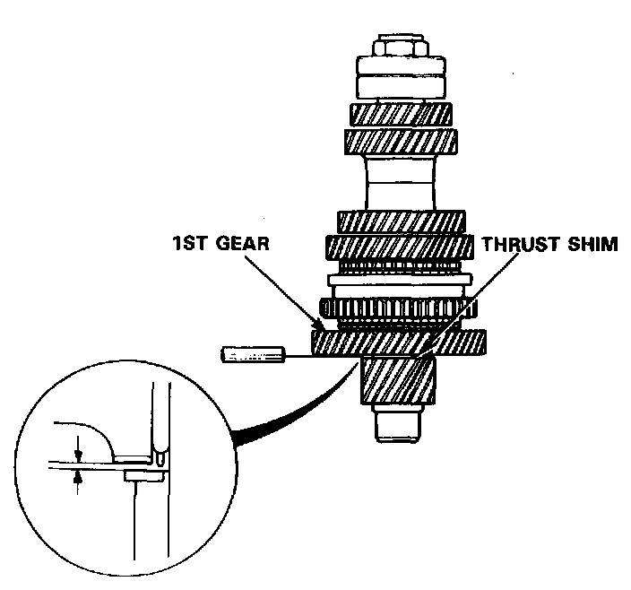
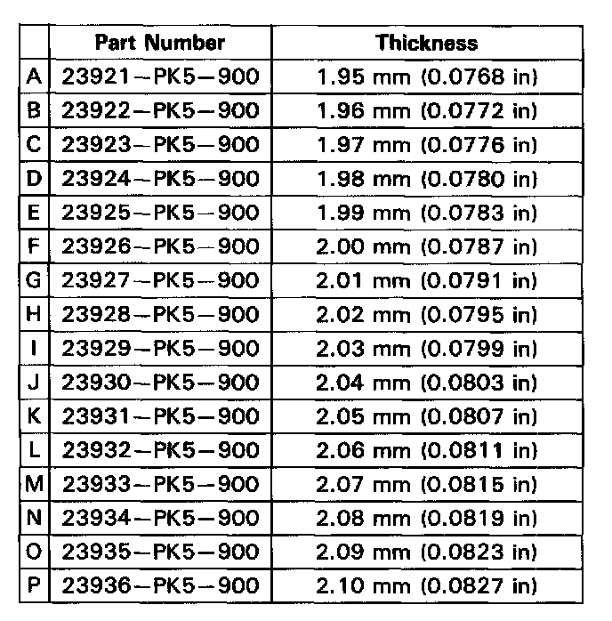
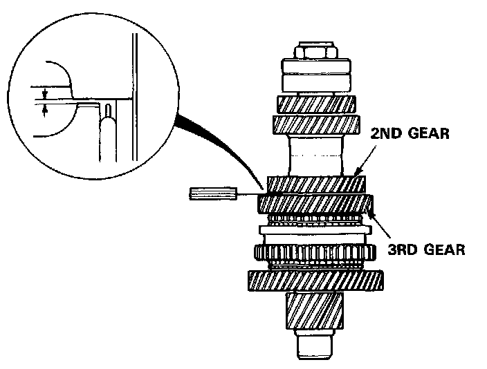
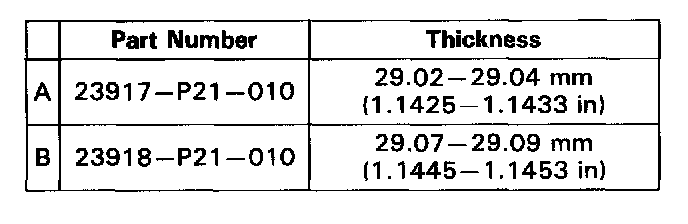

Countershaft: Testing and Inspection
Clearance Inspection
1. Measure the clearance between 1st gear and the thrust shim.
Standard: 0.04-0.12 mm (0.002-0.005 in)
Service Limit: 0.18 mm (0.007 in)

2. If the clearance exceeds the service limit, select the appropriate thrust shim for the correct clearance from the image.

3. Measure the clearance between 2nd and 3rd gears.
Standard: 0.05-0.12 mm (0.002-0.005 in)
Service Limit: 0.18 mm (0.007 in)

4. If the clearance exceeds the service limit, select the appropriate spacer collar for the correct clearance from the image.